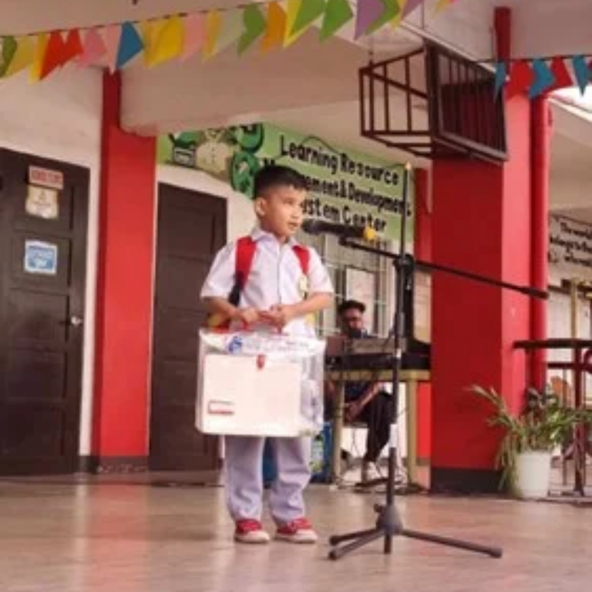
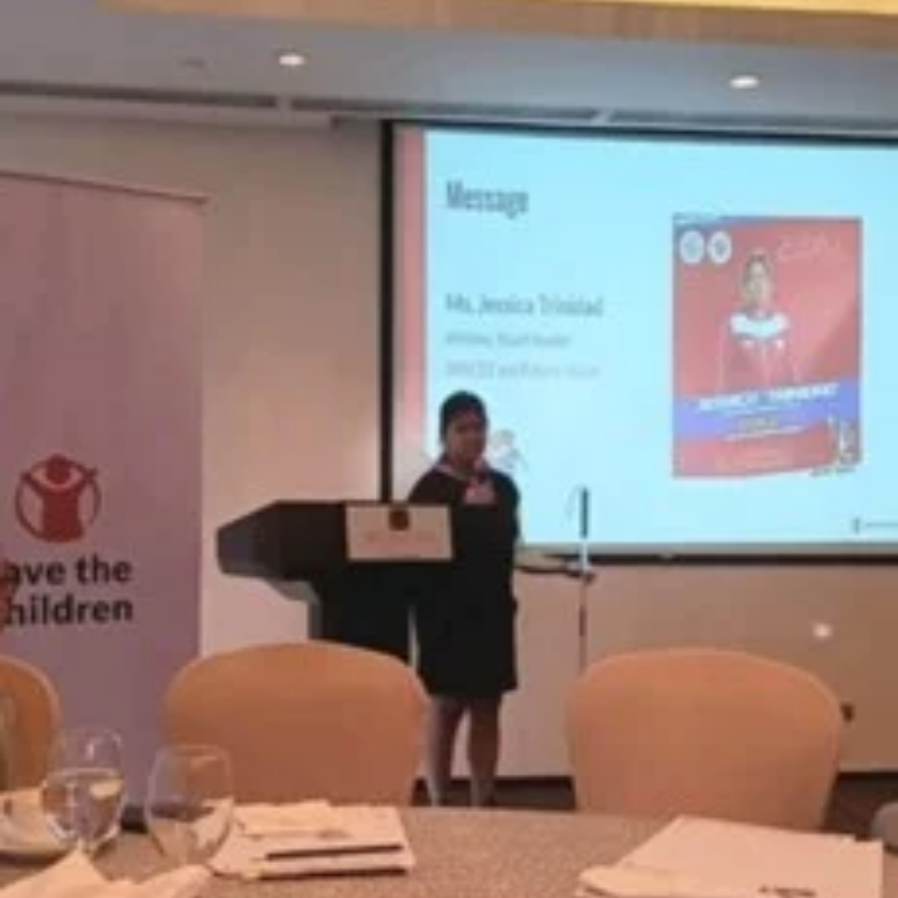
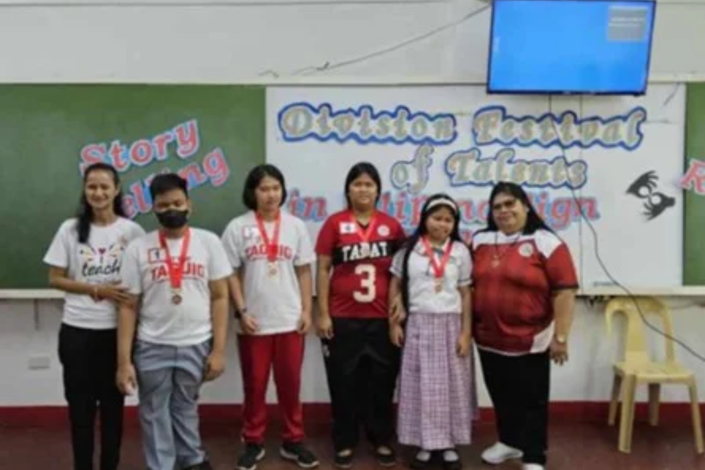
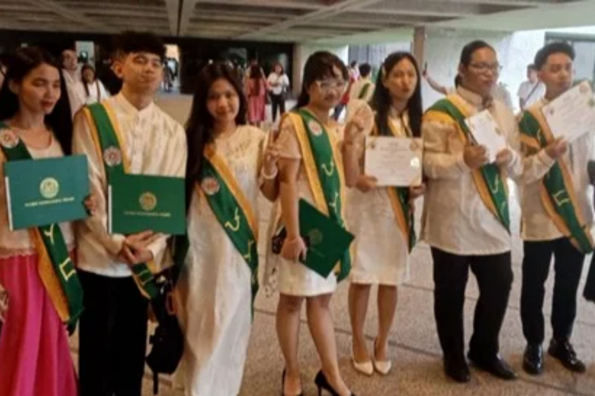

Dear Friends and Partners,
Visionful New Year greetings from all of us here at Future Vision the Home of the Future!
Despite financial challenges, 2024 was a resilient year for Future Vision. We proudly celebrate meaningful progress, empowering and transforming lives within our community. These achievements would not be possible without your unwavering support. We are grateful for your faith in our mission. Plunge into our annual highlights and discover the impact your support made.
Visionistas 2024
This year, we welcome four new members.
- Reginald Juan, or Yo, as his mother calls him, finally joined the school after years of searching for a suitable school for him. He has developed more and enjoys going to school and meeting other pupils.
- A 16-year-old boy who lost sight two years ago is now independently participating in online Bible School classes using a computer with a speech synthesizer.
- A 17-year-old boy with retinitis pigmentosa. He acquired Braille, computer, and android skills, finding them invaluable in his general education studies.
- A 12-year-old boy in first grade is residing with us due to poverty and distance from school. He spends the weekend with his family.
Thank you to our amazing partner organizations and social media friends for connecting us with the parents of the Visionistas mentioned above this year.
Materials/Equipment 2024
- Park Hyong Sik donated a Braille Display KGS Next Touch 40 through Save the Children Philippines.
- Tito Gerry provided the Braille Embosser dream of the Visionistas in April of this year.
Participations & Events
At Future Vision, we prioritize timely participation in enriching events that empower our members, particularly our Visionistas. This fosters growth, inclusivity, and development for them.








Gifts and Treats: Lunch/ Dinner Out
We extend heartfelt gratitude to the following individuals for their kindness:
- February: Nel, Nancy's sister, for generously sponsoring our lunch gathering at Chowking.
- March: Atty. Ian Datu and Ms. Giorgia Guidicelli presented us with gifts, a bag full of items.
- July: Missionary No Wha Jin and Abogi for facilitating our food fellowship at Jollibee after church service. Also in July, Jessica, the Goalball team champion, treated us to a sumptuous dinner at Wendy's. Following was Kagawad Kathy and her sisters for hosting us for dinner. Ate Emerald also Kagawad Kathy's friend for her exceptional generosity, treating us to: Dinner at Vikings and after which Shopping spree at SM Aura.
- Ms. Cristy Villanueva and Ms Maria Gracebacher quarterly gave cash gifts that helped us pay rent for that particular Month.
May your kindness be richly rewarded!
Projects and Activities
We had several projects lined up but few of them were carried and yet significant impact.
A Day with Braille
This day is to honor Louis Braille the inventor of the Braille System which enables the blind individual to read and write. Our Visionistas had exciting games about Braille and other presentations for more awareness. Everybody actively participated and developed more of their knowledge and insight about Braille and its importance.
10th Anniversary
Celebrating 10 Years of Empowerment Future Vision marks a significant milestone – our 10th anniversary! Over the past decade, we have transformed the lives of countless blind and low-vision individuals, their families, and communities. We have it at the SNED room of Eusebio C. Santos Elementary School with about fifty visionistas, parents/relatives, friends, guests, and visitors. Reflect on our journey and achievements as well as the success stories and inspiring accomplishments of our members.
Visiteaching Project
Six Children from different barangays received skills training right at their place twice a week in the month of June. Thanks to the Barangay Captain for the venue, materials, and participants' tokens. Also, to Mam Erika for the generous funding support for the stipends of the teacher, driver, and coordinator as well as their meals.
Table Setting for All Occasions
Participants in this activity are thirty individuals including eight of our visually impaired members. As a result, our members though blind became equipped with different table-setting skills like Skirting and napkin folding methods.
Christmas and Year-End Thanksgiving Program
Our joyful tradition of combining Christmas and Thanksgiving celebrations continued this year in our home. Despite our limited 50-square-meter space, we warmly welcomed around fifty loved ones, including parents and guests. The event was filled with gratitude, love, and generosity. Tito Gerry's generosity made Christmas wishes come true for our members. The potluck meals, courtesy of our parents and visitors, added to the joy. We are also grateful to KenetiX.Ph for fulfilling Future Vision Home's wishes, providing essential items like curtains, cleaning tools, and drinking glasses. Pastor Zandro also shared the message of love and salvation through the birth of our Savior Jesus Christ. And of course, the event is led by the visionistas themselves.
PARTNERS
Eusebio C. Santos Elementary School
For our visionistas, Eusebio C. Santos Elementary School is more than just a school. It serves as a secondary home for our visionistas, where spacious facilities accommodate various programs and activities That promote skills development and growth. Thanks to our partnership with the School Head Ms. Marife R. Castillo.
Resources for the Blind Inc.
On several occasions this year Resources for the Blind (RBI) had meaningful activities for the Visionistas. One is the Reading Device Demo in which a Mobile Device is tested for its usability as reading aids for the blind and visually impaired. The second one is Braille Book Testing. Visionistas participated in testing Braille books from Beta at the RBI office. Also, this year, RBI organized a Camp for the Blind and four of our visionistas namely Jeck, Jake, and Jessa did not only enjoy but gained enriching experiences that they take home. Finally, towards the end of December, a Workshop on Creating Accessible Documents with AI Integration was attended by the president and the Vice-president held in Cebu Philippines organized by RBI.
University of Makati
God's gracious guidance led us to a kind-hearted benefactor named Tito Gerry, unlocking the doors to the University of Makati. Three of our Visionistas are given opportunity and their university dreams become reality, and they are successful in their first semester.
Care Channel Inc. (CCI)
Just this year we signed a Memorandum of Agreement with Care Channels Inc. (CCI) marking our partnership with them. Ten of our visionistas in the elementary received 350 monthly support to augment in their transportation. While three of our college students were blessed to be part of Batch 2 BBCI College also received reasonable support for the 1st semester.
Plans for 2025
As we embark on a new year, Future Vision is committed to fostering growth, community and support. This comprehensive plan outlines our strategic objectives for 2025, focusing on essential expenses, project development, and partnership building. Your generous contribution will significantly impact our continued success.
You can Channel your support through the following planned projects and activities:
Home's Improvement
- Transfer to a bigger House Building
- Procurement of Cabinets and fixtures and Home Appliances/Equipment
- Procurement of Drum Set and other musical instruments and Sports Equipment
- General Assembly-Membership strengthening
Education
- Teaching at Future Vision Home (DLS, ONM, BLP, VVF,) etc
- Computer Empowerment Program
- Home Visiteaching 2025
- Cooking for the Future Project
- Outdoor Fun and Learning Activity (OFALA)
Community Awareness
- Future Vision @11
- Braille Awareness Day
- Orientation and Mobility-Training how to assist the blind and low vision
- Training of Teachers Handling Learners with Visual Impairment
- Mapping/profiling of Persons with blindness/Visual Impairment in nearby Cities like Pateros and Makati
Music Arts and Sports Development
- Procurement of Drum Set and other musical instruments and Sports Equipment
- Regular music time at the Home
- Music Arts Dance and Sports Development (Goal Ball, Chess & Athletics)
- Creation of a Resident Choir (Visionistas Choir)
Medical
- HOPE: Hello to my Ophthalmologists Project and Low Vision Expert
Livelihood
- Bead works Livelihood Training part II.
- Economic Empowerment Through Massage Training EETMT V